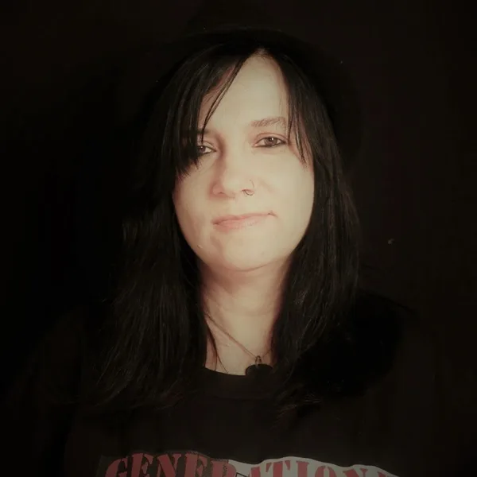

Georgie
Georgie doesn't seek out trouble. It just finds her on its own.
She's at war with her pompous family, and with her Catholic upbringing, so there's no choice except rebellion. Georgie wields her sarcasm like a weapon in her battles as a young misfit in the upper-class suburbs of Melbourne.
Where Georgie goes, mischief is never far.
- TroyHer BFF, and one of her only two allies.
- ChockyHer loyal pooch, and the other ally.
- Sister CatherineHer nun-nemesis.
The Plot Solidifies
Georgie, along with her trademark sarcasm and wit, is back.
This time she is a little older and a little wiser. Then her whole world falls apart, and so does she, until she has to learn the lessons that will set her on her path.

Kat Orgovany
Kat came of age a long time ago, and grew up on John Hughes films. She still can't get enough of stories about growing up and not fitting in.
She has been a freelance writer, and fan-girled while interviewing Suzi Quatro and Kate Moennig for magazines. She's a musician and storytelling songwriter too.
She started Georgie while finishing her Advanced Diploma in Professional Writing and Editing. It took an unfathomable number of years. Like a lot of her favourite films, it got a sequel.
Kat lives in Melbourne, and she is on the author list for All Booked Out, Ballarat's indie book fest.